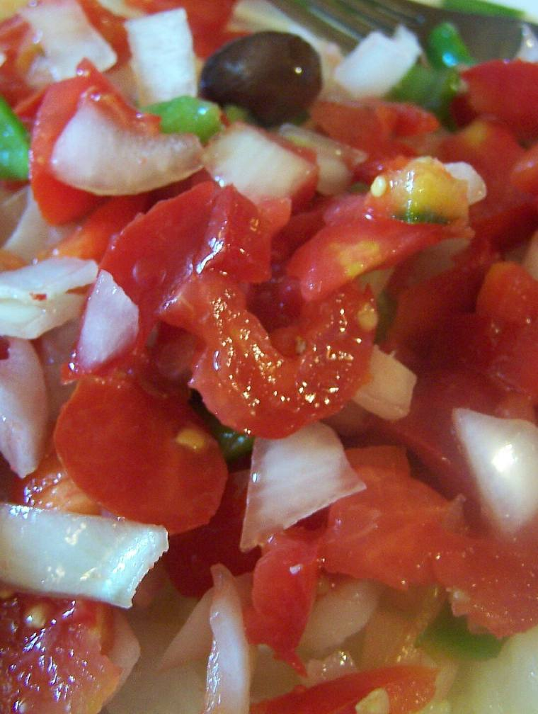

Entrées espagnoles et tapas

Entrées espagnoles et tapas
Esqueixada de bacalao
Salade catalane de morue
Préparation : 30 min
Repos : 1 h 10
Ingrédients (pour 4 personnes)
- 700 g de morue salée effilochée
- 1 oignon
- 300 g de tomates
- 100 g d’olives noires
- 20 cl d’huile d’olive
- poivre noir
Quantités adaptées. Les temps de cuisson ne sont pas recalculés.
- Tremper la morue 40 minutes dans beaucoup d’eau froide, changée 3 ou 4 fois. Goûter, puis presser.
- Mêler oignon émincé, tomates pelées en dés et olives.
- Ajouter la morue, poivrer, arroser d’huile, saler seulement si besoin.
- Servir après 30 minutes au réfrigérateur.
AstuceN’employer que de la vraie morue salée. Un cabillaud frais mangé cru doit d’abord être congelé (anisakis).
D’après Spain.info, office espagnol du tourisme. Traduit et reformulé.